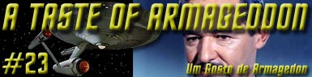
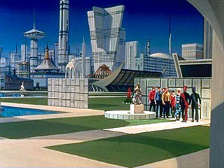
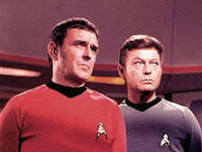
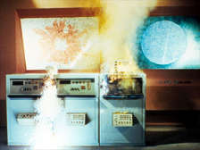
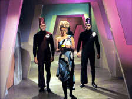
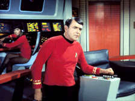
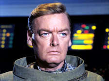
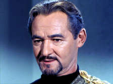

|
Srie
Clssica
Temporada 1

Anlise do episdio por
Carlos Santos


|
MANCHETE
DO EPISDIO |
A Enterprise enviada ao planeta Eminiar 7, levando um embaixador da Federao, o senhor Albert Fox, que tem como misso estabelecer relaes diplomticas com os locais. Neste mesmo planeta a Frota Estelar j havia perdido cinquenta anos antes a USS Valiant, que desapareceu misteriosamente.
Durante sua aproximao a nave recebe um aviso para retornar, um cdigo 7-10, mas Fox ordena a Kirk ignore este aviso e prossiga na misso. Kirk obedece, mas ao entrarem em rbita ele no permite a descida imediata do comissrio Fox, alegando que isto comprometeria sua segurana.
Kirk e Spock lideram um grupo de descida, que recebido por uma jovem local chamada de Mea 3. Esta recebe o grupo sem demonstrar nenhuma hostilidade e os informa que Eminiar 7 encontra-se em Guerra com seu planeta vizinho, Vendikar, por quinhentos anos. Kirk e Spock estranham tal informao, pois no h nenhuma demonstrao de tal guerra em lugar nenhum.

Anan informa que a Enterprise foi considerada atingida pelo ltimo ataque, e que por isto a tripulao da nave dever descer e se apresentar s cmaras de desintegrao do planeta, com o que Kirk obviamente no concorda, porm o grupo feito prisioneiro. Logo aps, Anan tenta enganar Scott, que est no comando da Enterprise, fazendo-se passar por Kirk e ordenando que a tripulao seja transportada ao planeta. Desconfiado, o comandante Scott submete a mensagem a uma analise de voz e descobre a farsa.
Enquanto isto em terra, Spock usa um tipo de telepatia para fazer com que o guarda que vigiava a cela onde estavam presos os oficiais da Enterprise abrisse a porta e os liberasse. De posse da arma da sentinela eles deixam a cela e perambulam at encontrar uma das cmaras de desintegrao. Aps deter Mea, que se dirigia para a cmara, Kirk destri a cmara o que inicia uma revoluo no planeta.
Eminiar expede uma ordem de busca e ordena fogo contra a Enterprise, entretanto Scott manteve os escudos da nave erguidos tornando o ataque sem efeito.

De volta ao planeta Kirk invade os aposentos de Anan e mais uma vez exige fazer contato com a Enterprise. Sem saber que Anan havia disparado um sinal de alerta secretamente o capito da enterprise ameaa destruir todo o planeta. Anan apesar de incrdulo informa a localizao dos comunicadores, mas assim que deixa os aposentos Kirk atacado pelos guardas que o aguardavam do lado de fora. Apesar de ter previsto a armadilha o capito da Enterprise nocauteado pelos guardas, em maior numero.
Enquanto isto Fox e seu assistente descem ao planeta sendo recebido pelo prprio Anan, que manda prend-los e informa que ambos devero ser mortos por terem sido consideradas baixas de guerra. Neste meio tempo Spock entre em contato com a Enterprise usando um comunicador nativo modificado por ele e ordena que ningum desa a Eminiar, e informado por Scott da descida de Fox.
Prevendo o destino do embaixador, Spock vai a sua procura, e encontra Fox (e seu assistente) prestes a ser desintegrado. O Vulcano impede a ao e explode mais uma cmara de desintegrao e Fox finalmente percebe que no adianta insistir na diplomacia convencional.
De volta a sala de Guerra, Anan tenta convencer Kirk a ordenar que a tripulao da Enterprise se entregue, obviamente sem sucesso. Anan mais uma vez entra em contato com a Enterprise com o propsito de mais uma vez tentar sua rendio, mas Kirk se aproveita do descuido dos guardas e (assim que aberto o canal com a nave) ele salta sobre o comunicador e ordena a Scott que implemente ordem geral 24. Kirk detido e Anan fala com Scott, ameaando matar os integrantes do grupo avanado caso Scott e a tripulao da Enterprise no se rendam. Kirk informa ento que em duas horas a Enterprise abrir fogo contra Eminiar.

A Enterprise, ignorando as ameaas de Anan, se move para fora do alcance da armas de Eminiar, enquanto Spock lidera um grupo em terra que continua destruindo as estaes de desintegrao. Anan fica ainda mais desesperado quando recebe uma mensagem de Vendikar perguntando o por que da cota de Eminiar no estar sendo cumprida.Scott entra em contato informando que a Enterprise colocou as principais instalaes do planeta sob mira e que caso o grupo de desembarque no seja devolvido a nave abrir fogo contra o planeta. Kirk se aproveita de uma desateno geral e domina os guardas que o vigiavam e momentos depois Spock chega com seu grupo. Os dois destroem os computadores com os quais os eminianos fazem sua guerra eletrnica, deixando-os atordoados com a perspectiva da destruio real do planeta. Kirk sugere a Anan que ao invs de se preparar para uma guerra convencional que procure os Vendikar e faa a paz.
Anan est atnito, mas o comissrio Fox se oferece para ajudar a negociar um tratado de paz, o que aceito. Kirk cancela a ordem geral 24 e o grupo retorna a nave deixando Fox para traz com a misso de ajudar ambos os planetas a estabelecerem um tratado que de fim a guerra.
Comentrios:
Continuando a saga homem contra maquina iniciada em "What are Little Girls Made Of?" E que prosseguiu em Court Martial e The Return of the Archons, A Taste of Armageddon fecha este semi-arco Roddenberry ano no primeiro ano de exibio da Srie Clssica. Se no primeiro discute-se a substituio do homem pela maquina, em Court Martial Kirk precisa se defender das acusaes do computador da Enterprise e em The Return of the Archons temos um planeta totalmente dominado por um computador que dita o modo de vida de seus habitantes, aqui vida morte so decises de computadores projetados para executar os jogos de guerra de Eminianos e Vendikars. A primeira e ultima tentativa parecem ser as que atingiram um melhor resultado e em ambos os casos, provavelmente por serem os temas escolhidos mais palpveis (a mecanizao da sociedade em "What are Little Girls Made Of?" E a guerra fria em EUA e URSS em A Taste of Armageddon), mas tambm pelo bom tratamento dado aos episdios.

Neste quesito A Taste of Armageddon cumpre seu propsito, ao mostrar uma sociedade que decidiu entregar o destino de seus indivduos a computadores. O motivo de tal escolha, a preservao da cultura de ambos os mundos que seria destruda em caso de uma guerra convencional, bem discutvel, uma vez que adota o pensamento materialista de que a cultura de um povo se resume aos prdios (ou qualquer edificao) de uma cidade, ou mesmo a obras preservadas em bibliotecas ou museus. Mas e quanto a contribuio das pessoas que declaradas mortas e incineradas? Que tipo de contribuio elas poderiam dar a sua sociedade? A equao de Eminianos e Vendikars falha neste quesito, o que apenas expe o obvio, que qualquer justificativa para a guerra estpida, seja esta travada da forma como for.
Porm nas entrelinhas podemos ver outros (talvez mais reais) motivos para que ambos os mundos no declarassem a paz, pelo menos do ponto de vista da Srie Clssica. Algumas falas do roteiro, como quando McCoy e Scott esto na ponte discutindo o que fazer quanto ao sumio do grupo avanado, e de que forma retaliar a ao dos Eminianos, as ameaas de Kirk a Anan 7, a facilidade com que Spock que sempre faz comentrios pouco positivos ao passado violento da Terra aceita a necessidade de uma soluo pelo uso da fora, a ordem geral 24.

Longe de ser um primor, o episodio perde muito por conta da soluo adotada para a questo envolvendo a tripulao da Enterprise e Vendikar, intervencionista ao extremo. A concluso de Kirk em momento algum tem a preocupao de respeitar o modo de vida das pessoas a quem ele deseja ajudar. Como o roteiro se encarregou de enfiar a Enterprise no meio da confuso, e sendo uma situao de vida e morte fica fcil simpatizar com o nobre capito mas se este mesmo raciocnio for aplicada a outras reas, economia por exemplo, a situao fica bem mais delicada, levantando uma outra perspectiva to importante quanto o discurso contra a guerra e contra mecanizao da sociedade e que fala da auto determinao dos povos, algo ignorado neste segmento. Mas preciso levar em considerao que Jornada antes de tudo entretenimento a no tem (ou teve) a misso de dar as respostas a todos os problemas do mundo. Cabe a ns, seres humanos, refletirmos sobre tais questes. Mesmo assim as aes de Kirk em Eminiar 7 merecem algumas consideraes.

Este exerccio de racionalizao serve somente para demonstrar mais uma vez que a to falada primeira diretriz, objeto de milhares de debates entre os fs da franquia, nunca foi algo levado muito a srio na TOS, uma concluso at meio obvia, mas eventualmente ignorada por muitos.
O segmento apresenta tambm mais um representante civil da Federao dos Planetas, o j citado embaixador Robert Fox, dono da mesma postura pedante e intransigente de seu colega anterior, o comissrio Ferris (Galileo Seven). Apesar de estereotipado, a presena de Fox e sua atuao parecem ter a inteno de demonstrar um efetivo controle civil sobre a Frota Estelar. Dizem que Roddenberry no queria um tom militarista para a srie, mas ao apresentar os (poucos) membros civis da Federao como o lugar comum do burocrata de gabinete ele no ajudou muito a dar credibilidade a sociedade civil de seu hipottico futuro.

Mas podemos louvar a ausncia de alguns clichs da Srie Clssica. Desta vez Kirk no seduz a Trek Girl da semana (TM), e nenhum dos camisas vermelhas morre de forma estpida e gratuita, apesar de no falaram uma nica palavra em todo o episodio, mas permanecem vivos ao menos. Ponto positivo tambm para o acrscimo feito ao personagem de James Doohan, que acrescenta ao seu currculo de fazedor de milagres a caracterstica de comandante perspicaz e eficiente tendo a seu lado o sempre companheiro McCoy, que desta vez acrescentou pouco ao conjunto da obra. Alias este segmento no apresenta grandes contribuies individuais, com Shatner regular e Nimoy burocrtico. Os convidados Gene Lyons (Robert Fox), David Opatoshu (Anan 7) e a Trek Girl Barbara Babcock (Mea 3) tambm ficaram em um nvel apenas razovel. Justia seja feita, Anan 7 pode ser considerado um daqueles viles com princpios que tanto gostamos de ver em Jornada, embora sem o mesmo brilho de outros colegas de oficio.
Anan
7: We have been at war for 500 years.
("Estamos em guerra h 500 anos.")
Kirk: If this is some sort of game you're playing--
("Se isto for algum tipo de jogo que voc est
jogando--")
Anan 7: This is no game, Captain. Half a million people have just
been killed.
("No um jogo, capito. Meio milho de pessoas
acabaram de ser mortas.")
Scott: That's a big
planet.
(" um planeta grande.")
McCoy: Not too big for the Enterprise to handle
("No to grande para a Enterprise lidar.")
Scott:
Diplomats. The best diplomat I know is a fully activated phaser bank.
("Diplomatas. O melhor diplomata que conheo um banco
de phaser totalmente ativado.")
Anan
7: My first impression was correct. You are a barbarian
("Minha primeira impresso estava correta. Voc um
brbaro.")
Kirk: I am?
("Sou?")
Anan 7 : Don't sound so incredulous, Captain. Of course you are. We
all are.
("No soe to incrdulo, capito. Claro que . Todos
ns somos.")
Spock:
By now, Mr. Ambassador, I'm sure you realize that normal diplomatic
procedures are ineffective here.
("Agora, Sr. Embaixador, tenho certeza de que o senhor
percebe que procedimentos diplomticos normais no tm efeito
aqui.")
Fox: I've never been a soldier, Mr. Spock, but I learn very quickly.
("Eu nunca fui um soldado, Sr. Spock, mas aprendo muito
rpido.")
Kirk:
Still, the Eminians keep a very orderly society, and actual war is a
very messy business, a very, very messy business. I had a feeling
that they would do anything to avoid it, even talk peace.
("Mesmo assim, os Eminians mantm uma sociedade bem
ordenada, e a guerra de verdade um negcio bagunado, um
negcio muito, muito bagunado. Eu sentia que eles fariam de tudo
para impedi-la, mesmo falar em paz.")
Spock: Feeling is not much to go on.
("Sentimento no ajuda muito a prosseguir.")
Kirk: Sometimes a feeling, Mr. Spock, is all we humans have to go on.
("s vezes um sentimento, Sr. Spock, tudo o que ns
humanos temos para prosseguir.")
Spock: Captain... You almost make me believe in luck.
("Capito... O senhor quase me fez acreditar em
sorte.")
Kirk:
Why, Mr. Spock, you almost make me believe in miracles.
("Bom, Sr. Spock, voc quase me fez acreditar em
milagres.")
 Na
verso original do roteiro (de Carabatsos e Hammer) a Enterprise
danifica seriamente e precisando de reparos somente realizveis em
Eminiar VII, entre em rbita contra a vontade do governo local e
Kirk se transporta ao solo, s para descobrir sobre a guerra (nos
moldes apresentados na verso filmada) com um planeta vizinho.
Nesta verso Mea tambm declarada uma baixa e planejava se
casar com Sar. Kirk destri o computador arriscando severo
envenenamento radioativo. Nesta verso no era feita nenhuma meno
em deixar diplomatas para trs para ajudar nas negociaes de paz.
Na
verso original do roteiro (de Carabatsos e Hammer) a Enterprise
danifica seriamente e precisando de reparos somente realizveis em
Eminiar VII, entre em rbita contra a vontade do governo local e
Kirk se transporta ao solo, s para descobrir sobre a guerra (nos
moldes apresentados na verso filmada) com um planeta vizinho.
Nesta verso Mea tambm declarada uma baixa e planejava se
casar com Sar. Kirk destri o computador arriscando severo
envenenamento radioativo. Nesta verso no era feita nenhuma meno
em deixar diplomatas para trs para ajudar nas negociaes de paz.
 Os
trajes dos Eminianos e alguns cenrios so remanescentes de What
Are Little Girls Made Of? Os adereos dos desruptores dos
Eminianos so base dos adereos dos desruptores Klingons.
Os
trajes dos Eminianos e alguns cenrios so remanescentes de What
Are Little Girls Made Of? Os adereos dos desruptores dos
Eminianos so base dos adereos dos desruptores Klingons.
 David
Opatoshu
pode ser visto em participaes em series famosas como: Nao
Alien, Buck Rogers, Ilha da Fantasia, A Mulher Binica,
Kojac, S.W.A.T, Hava 5-0, Daniel Boone,
Misso Impossvel etc.
David
Opatoshu
pode ser visto em participaes em series famosas como: Nao
Alien, Buck Rogers, Ilha da Fantasia, A Mulher Binica,
Kojac, S.W.A.T, Hava 5-0, Daniel Boone,
Misso Impossvel etc.
 Barbara
Babcock participou dos episdios: The Squire of Gothos
fazendo a voz da me de Trelane, Assignment: Earth como a voz
do computador Beta 5, The Tholian Web como a voz do comandante
Loskene, Plato's Stepchildren como Philana e The Lights of
Zetar como a voz dos Zetarianos. A atriz, que participou de sries
como Logans Run, Taxi, Cheers, Dallas e
Chicago Hope ganhou um Emmy (o Oscar da TV) por sua participao
na srie Hill Street Blues (1981) e mais recentemente pde
ser vista no filme Space Cowboys.
Barbara
Babcock participou dos episdios: The Squire of Gothos
fazendo a voz da me de Trelane, Assignment: Earth como a voz
do computador Beta 5, The Tholian Web como a voz do comandante
Loskene, Plato's Stepchildren como Philana e The Lights of
Zetar como a voz dos Zetarianos. A atriz, que participou de sries
como Logans Run, Taxi, Cheers, Dallas e
Chicago Hope ganhou um Emmy (o Oscar da TV) por sua participao
na srie Hill Street Blues (1981) e mais recentemente pde
ser vista no filme Space Cowboys.
 O
ator Sean Kenney que esteve presente como tenente DePaul tambm em
Arena, participou do episodio The Menagerie como o
incapacitado Cristopher Pike.
O
ator Sean Kenney que esteve presente como tenente DePaul tambm em
Arena, participou do episodio The Menagerie como o
incapacitado Cristopher Pike.
 Elementos do cenrio de Eminiar 7 foram reutilizados para
representar o planeta Scalos em Wink of an Eye.
Elementos do cenrio de Eminiar 7 foram reutilizados para
representar o planeta Scalos em Wink of an Eye.
 No
dia em que este episdio foi ao ar pela primeira vez, as foras
americanas no Vietn receberam reforo de 414 mil homens.
No
dia em que este episdio foi ao ar pela primeira vez, as foras
americanas no Vietn receberam reforo de 414 mil homens.
Histria de
Robert
Hammer e Gene L. Coon
Direo de Joseph
Pevney
Exibido em 23/02/1967
Produo: 23
Elenco:
William Shatner
como James Tiberius Kirk
Leonard Nimoy como Spock
DeForest Kelley como Leonard H. McCoy
Nichelle Nichols como Uhura
George Takei como Hikaru Sulu
Elenco convidado:
David
Opatoshu como Anan 7
Gene Lyons como Embaixador Robert Fox
Barbara Babcock como Mea 3
Miko Mayama como Tamura
David L. Ross como Tenente Galloway
Sean Kenney como Tenente DePaul
Robert
Sampson como Sar 6